The magazine and the environmental movement are two rafts that went down the same river at the same time.
EARLY in 1978 an advertisement seeking "only the best writers in the world" ran in major newspapers throughout the country. It promised that those hired could set their own hours, design their own offices, and name their own salaries. The ad was obviously tempting. But even without that challenge to arrogance and those flowery promises, I still had good reason to apply.
For 1978 was a time of hyperinflation, the energy crisis, oil-spill-soaked and DDT-destroyed bird life, proliferating nuclear power plants, an exploding world population, and rising crime and pollution in big cities like Paris, New York, and San Francisco, where this small-town, Southern girl had spent most of her adult life. Then, too, in my years as a travel writer, I'd seen firsthand the ecological rape, poisoning, pollution, and thoughtless development of many of the world's loveliest places. To say I was appalled is an understatement.
Moreover, in this environmental wasteland, one of the strongest voices for the planet and all its life-forms was Mother Earth News, the magazine that placed the ad.
John Shuttleworth at work. Rather than by "desktop" publishing, he started the magazine more by an "on the kitchen table" method.
Approaching environmental problems from a down-to-earth, practical, how-to standpoint, Mother was a pioneer in providing solutions to the energy crunch and promoting recycling, family farms, saner agri cultural practices, better eating habits, medical self-care, more meaningful education, affordable housing, and, in the process, offered a platform for some of the most far-thinking minds of the day.
One of the most persuasive voices in those days was that of John Shuttleworth, who, with his wife, Jane, had started the magazine "on a shoestring" in 1970. In March 1975 he wrote: "For at least 20 years now, I've been getting an increasingly uncomfortable suspicion that all the major nations of the world-capitalist and communist-suffer from the narrow delusion that only people, and people alone, have any rights on this planet. Further, that human wants, needs, and desires-seemingly the more capricious the better-should be instantly gratified. And further still, that this can always be done in a strictly economic frame of reference.
"In short, I think that we live in an unbelievably marvelous Garden of Eden. Surrounded by miraculous life-forms almost without number. Kept alive by a mysteriously interwoven, self-replenishing support system that, with all our scientific 'breakthroughs,' we still do not understand.
"And yet, as favored as we are by all this real wealth, we somehow perversely prefer to spend almost all waking hours interpreting the sum total of this reality in terms of the narrow and distorted, strictly human-centered concept of money.
"Civilization, it seems, is just another word for 'lunatic asylum.'
"You've got to be collectively crazy when you belong to a species that can casually assemble enough nuclear weapons to totally destroy all the life on earth a hundred times over. Or breed and stockpile more than enough special strains of anthrax and God knows what other super-diseases to do the same thing. Or completely-and, again, casually-exterminate other whole species for the manufacture of lipsticks and rectal suppositories. Or ransom the lives of the next 20,000 generations with atomic waste just so this generation can continue doubling its consumption of electricity every Io years.
"'I am something special,' man tells himself. 'I will prove it by conquering nature.' But as one of his number is later to observe, 'Nature is always passive. It, therefore, can never be defeated. It can only be destroyed.'"
At the magazine's Eco-Village, a waterwheel (far left) powered the workshop.
(Two years later, in the May/June 1977 issue, guru Stephen Gaskin refused to let the world get by on a "lunatic" theory or the insanity plea. "There's no such thing as crazy," he remarked, "because we all have free will, and we're doing what we want to do. That's how you can tell what somebody wants to do, because that's what they're doing.")
Mother Earth's " 3 VG" (left), one of several experimental vehicles built by the technical staff. At right, subscribers on Alaska's iceberg-strewn Alaska’s River; “Tours That Teach” went everywhere.
One Sunday, less than a week after answering Mother's ad, I received a phone call from John Shuttleworth. It was not my writing background but rather my travel background that interested him, because he was thinking about setting up world tours so readers could see for themselves that the planet was worth saving. Six weeks later, I was in the USSR, scouting out health spas in the Soviet Union for a tour that would concentrate on natural cures (still used there today). The following July, with all the worldly possessions I thought I couldn't live without in five boxes and two suitcases in the back of a nine-year-old pickup, I arrived in the western North Carolina mountains (surely one of the world's loveliest areas) to become a full-time member of Mother's staff.
Former editor Bruce Woods (left) at work in one of the many experimental organic gardens maintained by both editorial staff and gardeners.
Initially, I found the ad had lied. The magazine was housed in a huge, mazelike former dress factory. There was no central heat or air-conditioning, and the people-packed building mostly windowless. In order to put out a publication that carried an average of more than 80 articles and columns an issue, the work demands often stretched into the were hours of the mornings and through the weekends. And, at the time, there were only two editor/writers, recently arrived Bruce Woods and Richard Freudenberger, who had answered the same ad I had. Any fears of a writer's block quickly melted under the necessity of single-handedly researching, writing, or extensively editing some 20 or more articles and columns an issue, while at the same time planning, putting together, and escorting tours.
The bit about "naming your own salary" also turned into an office joke, but the pay has been good enough for staff members to realize their particular version of a "home in the country," with everyone putting to good use those wonderful gardening, crafts, food, livestock, pet, building, and energy tips that have become staples in the magazine over the years.
There were other compensations, however, more unbelievable than the ad ever promised. First and foremost were the memorable, intelligent, dedicated, loyal, hardworking, life-loving characters who have graced the magazine's masthead-some briefly, some for years, some still here. They weren't the types to just preach about saving Earth and all its life-forms. Mother's old motto, More than a magazine ... a way of life, applied most of all to its staff members and their support of each other. In joys and sorrows, through marriages, divorces, deaths, family losses, accidents, sickness, and the births of boodles of babies, the love and understanding of this extended family has been there for every one of us.
Then, of course, there was the work itself. You might interview a famous person one day and study the subtleties of birthing piglets, making compost, or sharpening chain saws the next. And no matter how much you learned, there was not an interview conducted, a trip taken, an article written that wasn't on some level an education in itself. As a result, there hasn't been a morning in the past 12 years when I've thought. Do I have to go to work today? It's always been a pleasure.
And, finally, there were the readers-hundreds of thousands strong and loyal to a fault. Over the years, you've been as responsive to our needs as we've tried to be to yours. But, oh, how quick you've been to let us know when we didn't live up to your, or our own, expectations! You've always been our best source of information and inspiration.
On October 31, 1978, four months after I arrived at Mother, John Shuttleworth, an overworked genius suffering a well-earned burnout, turned the editorial leadership of the magazine over to Bruce Woods. It was an excellent choice, because, during 12 strenuous years, Bruce never wavered from his deep and protective respect for the publication's principles, as well as for its staff. Always accessible to help solve the slightest problem, he gave us complete trust and creative freedom. In fact, one often hesitated to express an innovative idea, because the answer was likely to be, "Great! Go do it!" and you'd realize you'd added to your already heavy work load.
A little over a year later, John made it possible for Bruce and two other employees to buy the publication. For me, that signaled the arrival of the "Golden Age of Mother."
Subscriptions soared from around 600,000 to over a million, and we began to exert real influence on environmental legislation. The Eco-Village, a 600-acre research center, was in full swing with vast experimental gardens, houses, and energy projects. Twenty thousand people each summer took our seminars on everything from bee-keeping to cordwood construction. Mother's radio show blanketed the air-ways, and our alternative-fuel vehicles crisscrossed the nation and became regular items on local and national television news shows.
Best of all, talented, innovative editors were hired to ease the work load, leaving me time for my particular interest. Mother's "Tours That Teach." These trips offered opportunities to explore solar energy in Israel and alcohol-fuel production in Brazil; to the South Pacific as well as Tanzania's wildlife and Rwanda's mountain gorillas, with ecologists and Mother's columnists Anne and Paul Ehrlich. Readers rafted with us on wild Alaskan rivers; hiked the Alps; trekked in Nepal and Lahdak; biked Southern China, Inner Mongolia, and Sri Lanka; met the top crafts people in Scandinavia and Kath-mandu; and much more.
Then in 1982 I bought a personal computer and started to do most of my writing at home. Other editors soon followed suit, and the original promise of "working your own hours, designing your own office" finally came true. Instead of having to leave my house overlooking a small lake for a 45-minute, gas-consuming, air-polluting commute to the office, I can simply throw open the double-glass doors leading from my study to a deck and get to work. From my keyboard I'm able to watch the birds flit through the treetops and can listen to the sound of a rhododendron-surrounded waterfall down below.
Less than four years after President Ronald Reagan was elected, the magazine began to feel the effect of his policies. Simple-living back-to-the-landers were evolving into the "me generation," and the importance of that "narrow and distorted, strictly human concept of money" became even more exaggerated as individuals and governments alike began to borrow heavily to instantly gratify capricious human wants, needs, and desires. Gas lines and inflation were (temporarily, at least) things of the past and quickly forgotten, as were disasters like Three Mile Island and Love Canal. (With 30,000 hazardous-waste sites identified as dangerous around the country, any additional toxic spills and contamination caused little more than local outrage. We're also just now learning that Three Mile Island was a much closer call than we thought in 1979.)
The Reagan Era was assessed in our March/April 1983 issue by Russell Peterson, former Delaware governor and head of the National Audubon Society, who during the Nixon-Ford administrations chaired the President's Council on Environmental Quality and who served under Jimmy Carter as director of the Congressional Office of Technology Assessment:
"I think we were moving ahead nicely until Ronald Reagan became president. In the late '60s and early '70s, young people began to protest en masse what we were doing to pollute our air, water, and land, and soon their parents them. The net result of such widespread concern was a remarkable set of environmental laws passed during a lo-year period: the Clean Air Act, the Clean Water Act, the Endangered Species Act, the Toxic Substance Control Act, the Surface Mining and Reclamation Act, the Wilderness Act, and others. Most of this legislation was accomplished because it had bipartisan support. Some of it even passed unanimously, simply because the people demanded it.
A pioneer in publicizing solar energy, Mother constructed many passive-solar models at Eco-Village, including this greenhouse Active solar also became a focal point of its energy activities.
"Then along came Ronald Reagan, and all this progress got seriously threatened by his attempt to carry out an anticonservation coup in the country. During his campaign, he said that environmental regulations were detrimental to the economy, so we should free up the exploiters of our natural resources, and the country would prosper by the upsurge in business activity. Of course, he didn't use those exact words, but that was his real intent. . . . Even Reagan's infamous statement about trees polluting more than smokestacks provoked little more than a temporary flurry of editorial cartoons.
"I supported Carter for reelection in 1980 because I knew he understood environmental issues in depth. Reagan, on the other hand, is an ecological illiterate. I knew he was an anticonservationist. When we were both governors, he liked to belittle conservationists; he would come right out and refer to environmentalists as 'those kooks.' Still, I had no idea that-once in office-he would carry out such a sweeping attack on the environment. The foxes now run the henhouse."
We soon felt the fallout of those policies and the changed attitudes. By 1984, subscriptions had dropped. Paper, printing, and postage costs continued their upward spiral. Many advertisers mistakenly began to view us as a backward-looking, hippie publication. Revenues shrank, and the Eco-Village had to be closed. A painful staff layoff followed, though our gardeners, Susan and Franklin Sides, kept a small but equally valid research garden near their home. Mother's Tours became another victim, partly because the editorial staff needed to be cut, too, and I was needed full-time as a writer and an editor, but partly because the "me generation" had also become the "stay home generation"-a xenophobia fueled by Reagan's Evil Empire mentality and his chest-pounding Ram-boesque chauvinism.
Eco-Village one attracted thousands of readers to pay a visit.
Beekeeping (above) and hydroponic gardening (right) were also staple of Mother's hands-on teaching style. Indeed, in its heyday, the magazine functioned almost like an open-air university.
By late 1985, the magazine faced very tough going. Then, young and energetic Owen Lipstein came to the rescue. Five years earlier, he had, like John Shuttleworth, started a magazine, American Health, on a shoestring, riding the crest of the l980s' concern with personal health and fitness to remarkable success. Bruce Woods stayed on as editor of Mother, and computer technology, express mail, and fax machines allowed the editorial staff to remain in the North Carolina mountains, though this meant additional trimming of other types of staff. "Lean and mean," it's called in the corporate world.
But, again, there were compensations. Wrapped in a new package and graced with the talent of top photographers. Mother Earth News' sane, planet-saving, lifesaving, cost-saving how-to themes attracted both old and new readers and advertisers alike. By 1988 it had the fastest-growing advertising revenues of any magazine in the country, even while, editorially, it was still keeping the faith and showing the way.
Like all vital, living things, the magazine will continue to evolve. As this is being written, Bruce Woods has just "retired" to help raise his long-awaited firstborn, Ethan, and will finally get to spend more time enjoying the outdoor sports he loves and has written about so well in Mother's pages.
Alfred Meyer, who joined us in North Carolina a couple of years ago to put out our American Country specials and who stayed on staff to write our "Open Road" column, has stepped in as the new editor in chief with his own special vision, one that will unfold in the issues ahead.
And the climate is changing too: both literally, as in the greenhouse effect and the thinning ozone layer, and figuratively, as disasters-such as Chernobyl, syringe-polluted beaches, the Exxon Valdez oil spill, and the Alar/apple scare-have put the environment on media front pages and made it the number-one priority of people worldwide. Suddenly at Mother we are no longer "those kooks," and the children of the '60s generation are, once more, putting quality ahead of quantity.
But whether, in the future, we're considered a magazine of either the fringe or the mainstream, Mother Earth News will remain dedicated to two main tasks John Shuttleworth defined in the early years: "Help people take back control of their lives, and ease us all into placing the interest of the planet over and above the personal greed that contemporary society rewards so lavishly."
Finally, there is every reason to take heart, for the environmental movement, lately reenergized, is here to stay. So, for that matter, is Mother Earth News.
|
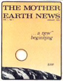 John Shuttleworth at work. Rather than by ""desktop"" publishing, he started the magazine more by an ""on the kitchen table"" method |
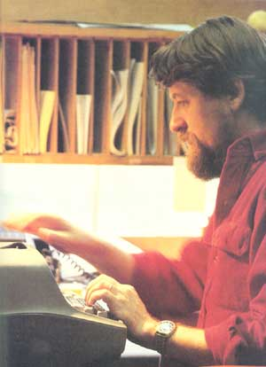 magazine on reagan era |
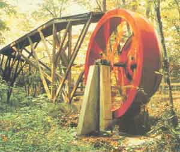 Eco-Village |
|
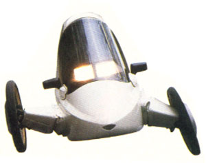 |
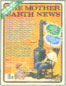 |
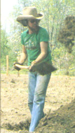 |
|
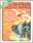 |
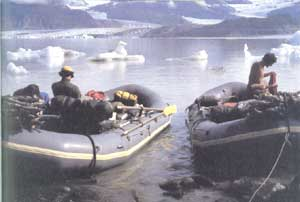 |
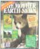 |
|
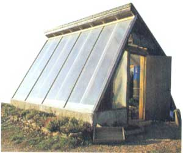 |
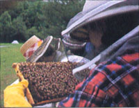 |
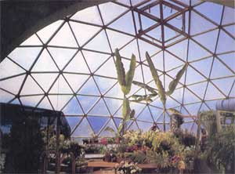 |
|
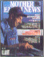 |
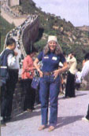 |
|